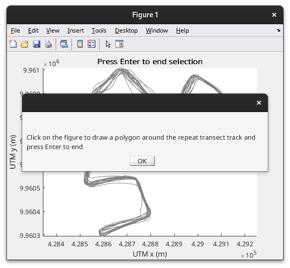
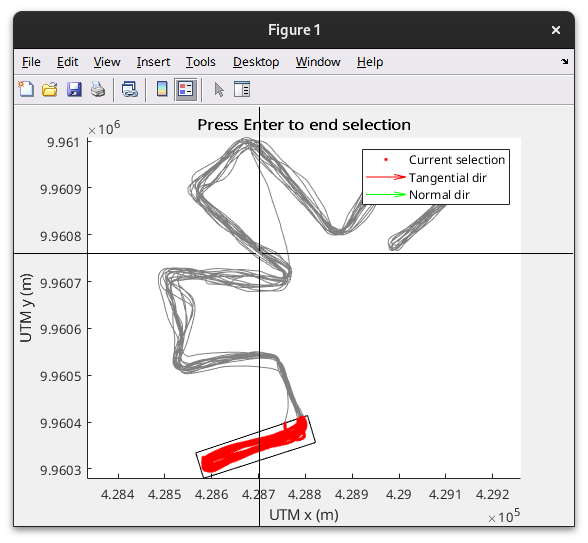
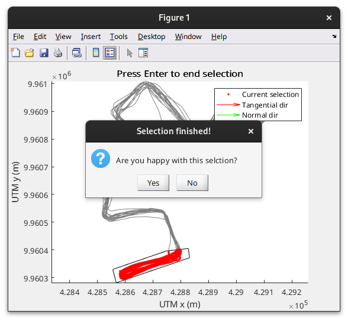
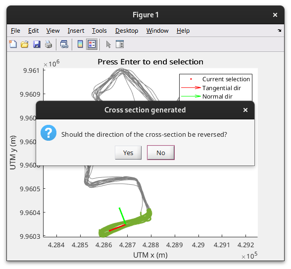
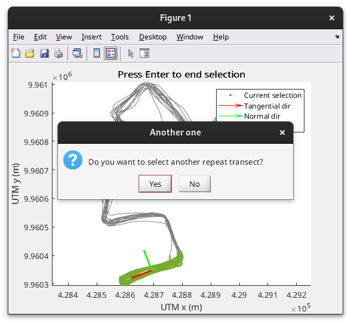
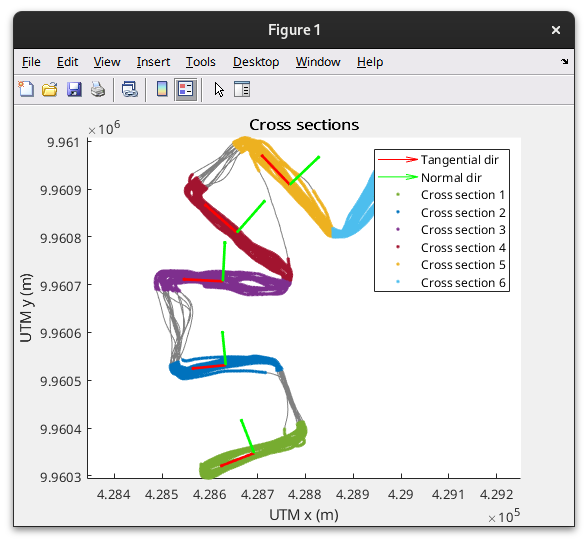

Selection of data for repeat transect processing
Contents
When processing repeat transect ADCP data, a selection needs to be made regarding which data belongs to a certain cross-section, we also may want to exclude parts of the data from the processing. Data selection is done through EnsembleFilter objects. An EnsembleFilter object. We can create an object:
ensfilt = EnsembleFilter(mmbend)
ensfilt =
EnsembleFilter with properties:
bad_ensembles: [0 0 0 0 0 0 0 0 0 0 0 0 0 0 0 0 0 0 0 0 0 0 0 0 0 0 0 … ]
description: 'Ensemble filter'
The EnsembleFilter object has the property bad_ensembles that marks which ensembles are not to be included in the processing. There are different ways to generate an EnsembleFilter object.
File based selection
Sometimes during data collection separate files are made for different cross-sections or repeat transects. In this case it is possible to select data based on the file. The example dataset was generated from two files:
unique(mmbend.fileid)
ans =
1 2
We can now create an EnsembleFilter object that excludes data that was not in the first file:
ensfilt = EnsembleFilter(mmbend, mmbend.fileid ~= 1);
we can plot the result:
figure plot(ensfilt,mmbend)
We can see that the last part of the ensembles is now marked as bad and will be excluded from the processing. In this case, the selection based on the input file does not make sense and we want to use another method.
Location based selection
in order to select the data based on the location we can use the helper function cross_section_selector. This will present the use with a plot of the track and will allow to draw a polygon around the data that will be included in the processing. Multiple cross-sections can be selected with this tool
[ef, xs] = cross_section_selector(mmbend);
After running this command you will be presented with a figure which contains the track and a dialogue explaining that a polygon can be drawn around the part of the track to be included in processing by clicking to define the vertices of the polygon.

The included data is highlighted while drawing the polygon.

Once you are done selecting you press Enter, and you are presented with a new dialogue, asking whether you like the selection. Clicking no will allow to redo the selection

After you accept the selection, two arrows are added, indicating the tangential and orthogonal direction of the cross-section. You are now asked whether the directions should be reversed. The direction of these vectors are important, since, later, they will define the direction of positive velocity components. In this case the orthogonal direction is pointing downstream, so we do not want the direction to be reversed and click on 'No'

Now we have finished define the first cross-section. You are now asked whether you want to select another cross-section.

We will click 'Yes' and repeat the procedure until we have selected all cross sections. Once done, we will click 'No' and end the data selection procedure

the result of the selection is 7 EnsembleFilter objects, one for each cross-section
transect_data_load_xsections % loading previously generated EnsFilters
ef
ef =
1×7 EnsembleFilter array with properties:
bad_ensembles
description
Also, 7 XSection object were defined:
xs
xs =
1×7 XSection array with properties:
origin
direction
scale
direction_orthogonal
These define the origin and direction of cross-sections. More details about these classes are given in the next section about Defining cross-sections.